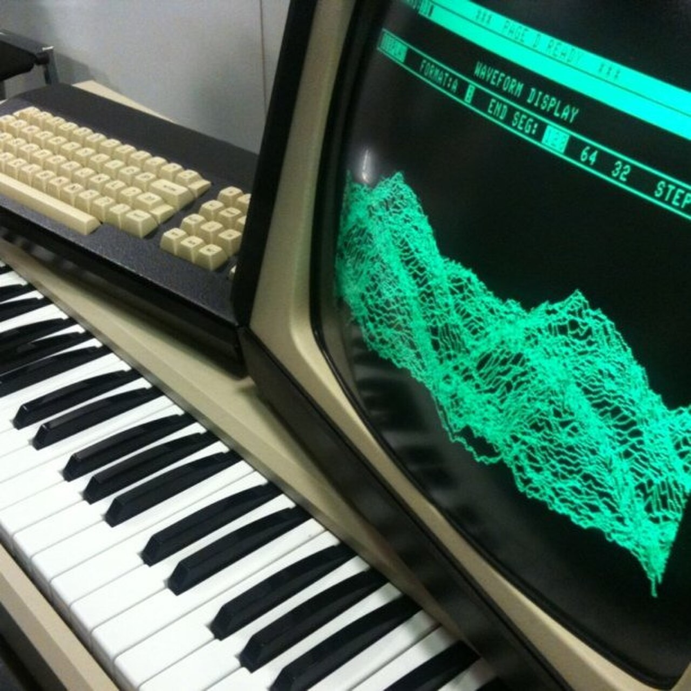
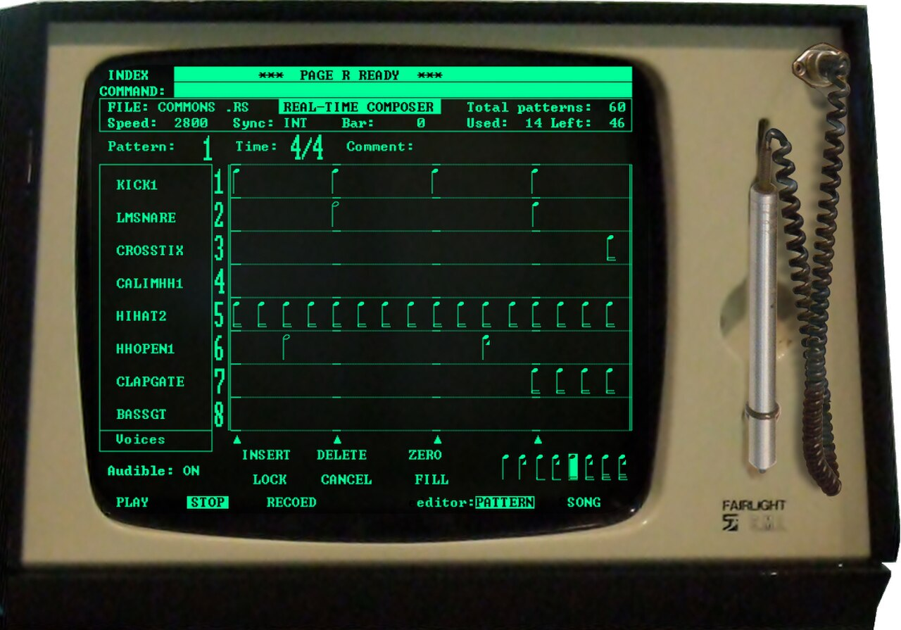

Fairlight CMI (Computer Musical Instrument)
The first digital sampling synthesizer — draw sound with a light pen.

Overview
The Fairlight CMI (Computer Musical Instrument) was the first commercially available digital sampling synthesizer and music workstation, created by Peter Vogel and Kim Ryrie in Sydney, Australia, and launched in 1979. It combined an 8-bit sampler, additive synthesis, a graphical sequencer, and a music keyboard into a single console. Its defining HCI feature was a light pen used directly on the CRT display: musicians could draw sound waveforms, adjust harmonic sliders, and compose music by pointing at visual representations of notes — all without a mouse, years before the Macintosh popularized the WIMP interface.
The CMI was built around dual Motorola 6800 processors, booted from 8-inch floppy disks, and displayed in green monochrome at 512×256 pixels. The light pen detected electron-beam hits on the CRT and, combined with a pressure-sensitive tip switch, enabled direct pointing, selection, and drawing. A QWERTY keyboard handled symbolic input; the light pen handled spatial tasks. The result was a dual-modality interface that bridged the command-line and GUI eras.
Only about 300 units of the Series I, II, and IIx were built, priced between £15,000 and £30,000. The user list reads like a who's-who of 1980s music: Peter Gabriel, Kate Bush, Herbie Hancock, Stevie Wonder, Jean-Michel Jarre, Art of Noise, and Jan Hammer. The CMI's 8-bit sampling grit and its iconic ORCH2 "orchestra hit" became the sonic signature of the decade. Its Page R sequencer invented the piano-roll/pattern-grid editing paradigm that every modern DAW still uses.
Deep dive
The Fairlight CMI began with Tony Furse's Qasar M8, an 8-voice digital synthesizer built for the Canberra School of Electronic Music in 1974–75. The Qasar already featured a light pen, graphic display, and dual Motorola 6800 processors. Peter Vogel and Kim Ryrie licensed the design and spent 1976–1979 turning it into a commercial product. The company was named after the Fairlight hydrofoil ferry passing Ryrie's grandmother's house in Sydney Harbour. The Series I launched in 1979; Series II (1982) added the iconic Page R sequencer; Series III (1985) replaced the light pen with a graphics tablet after user complaints about arm fatigue from holding a pen against a vertical CRT.
The light pen was a photodiode sensor in a tethered wand. As the CRT's electron beam scanned the phosphor screen line by line, the pen detected the flash of light when the beam passed beneath its tip. The video card latched the current X-Y coordinates, giving screen position. Pressing the pressure-sensitive tip switch confirmed a selection. The UI was organized into 18 numbered 'pages' — waveform drawing (Page 6), harmonic envelopes (Page 4), harmonic sliders (Page 5), sound sampling (Page 8), and the waveform 'mountain range' display (Page D). Users could draw waveforms directly on screen 'as simple as drawing on the back of a bus ticket' (EMM, 1985). The MERGE function computed intermediate waveform segments — early computational morphing. The QWERTY keyboard handled text entry and numeric commands; the light pen handled all spatial/drawing tasks. Only about 5% of functions required the keyboard.
Created by Michael Carlos for the Series II in 1982, Page R displayed notes as horizontal bars on a grid, read left to right like a piano roll. Up to 8 monophonic parts per pattern, 255 patterns chained into 26 phrases (A–Z). This invented the visual pattern-grid editing paradigm and the concept of quantization, now universal in DAWs (Ableton Live, Logic, FL Studio, Cubase). Audio Media Magazine (1996) noted it 'heralded the democratisation of music creation, making it available to the musically chops-challenged.' CMI user Roger Bolton: 'The CMI II was a high-level composition tool that not only shaped the sound of the 80s, but the way that music was actually written.'
Each of 8 voice cards had 16KB of waveform RAM, sampled at 8–32 kHz with 8-bit resolution — a typical sound was 0.25 to 1 second long. The low sample rates introduced aliasing artifacts that Peter Vogel called 'their own character.' The bass response was reportedly 'awesome with an ability to move furniture.' Boris Blank of Yello still considers its sound superior to later digital samplers. The famous ORCH2 sample — a Stravinsky Firebird stab grabbed from Vogel's vinyl collection — became the most-sampled sample of all time, heard on thousands of records from Afrika Bambaataa to Bruno Mars. ARR1, an ethereal breathy choir created from singer Sarah Cohen's voice, was another ubiquitous sound.
Only about 300 CMIs were built. Priced at £15,000–£30,000 (roughly £60,000–£110,000 in 2024), it was undercut by MIDI-based systems by the late 1980s. Fairlight pivoted to video post-production and ceased music products by 1989. Yet its influence is extraordinary: the first general-public user of a light pen for creative work, the first graphical music sequencer, the origin of the word 'sampling' in music. It was the original digital audio workstation, a decade before Pro Tools. Peter Vogel later released Fairlight CMI apps for iOS (2011) — the £27,000 sound became a £29.99 app. The CMI was named as the inspiration for the Swedish demoscene group Fairlight, and the UK Musicians' Union called it a 'lethal threat' to orchestral players. Phil Collins put a disclaimer on No Jacket Required (1985): 'There is no Fairlight on this record.'
Team & pioneers
- Peter Vogel. Electronics designer and co-founder of Fairlight Instruments; built the CMI hardware.
- Kim Ryrie. Co-founder of Fairlight Instruments; synthesizer enthusiast and founder of Electronics Today International magazine.
- Tony Furse. Built the Qasar M8 digital synthesizer (1974–75), whose light-pen architecture was licensed as the basis for the CMI.
- Michael Carlos. Created Page R, the first graphical pattern-based music sequencer, for the Series II in 1982.
Media

Sources
- Fairlight CMI - Wikipedia
- Sound on Sound Retrozone — Fairlight CMI
- The Register — 'Rolls Royce of synthesizers'
- Peter Vogel Instruments — Fairlight History
- EMM — 'The Fairlight Explained' (1985, Page 6 light pen)
- Science & Media Museum — Fairlight CMI Playlist
- Herbie Hancock demonstrating the Fairlight CMI (YouTube)